|
Complex Number Home : www.sharetechnote.com |
|
Whenever you come across a new concept, your first question would be "what is it ?". So you would now have a question "What is a Complex Number ?". Mathematical definition is simple. A complex number is any number that can be expressed in the following format.
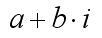
In more detail, each component of these special number has its own meaning as shown below.
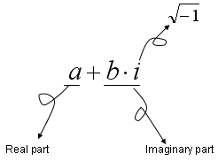
Here, 'a' and 'b' can be any kind of number you ever know.. they can be an integer, rational number(fraction), irrational number.. anything. One thing that makes the complex number so special would be the symbol 'i'. and you would have a lot of questions about this special symbol, like "What is it ?", "What is practical or physical meaning of it", "Why we need it ?" etc. But let's push all of these questions aside for now. (However, these questions are very important.. so don't give up raising questions like these).
Anyway by the mathematical definition, you would realize Complex number is the largest group of the number system. It includes 'natural number, integer, rational number, irrational number' as a part of its component. Here goes several examples of complex numbers.
Is the following number a complex number ? 2 + 3 i Yes, it is because it matches the form of a + b i.
Is the following number a complex number ? 2 + 1/3 i Yes, it is because it matches the form of a + b i.
Is the following number a complex number ? 0.2 - 1/3 i Yes, it is because it matches the form of a + b i.
Is the following number a complex number ? 2 ????????, it doesn't seem to be a complex number because it does not look like a form of a + b i. But this is still a complex number. How ? Because it can be expressed as '2 + 0 i'. By this logic, you would realize "Any single number that you have known until now can also be a complex number". For example, -4.5 can be a complex number if you interpret it as '-4.5 + 0 i' and 1/3 can be a complex number if you interpret it as '1/3 + 0 i' etc.
I read many different posts about the history of Imaginary number or why we need this system. Most of the material that I read were based on the following two question and answer.
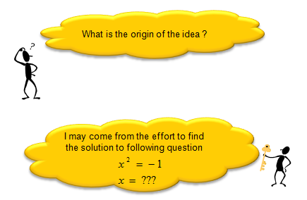
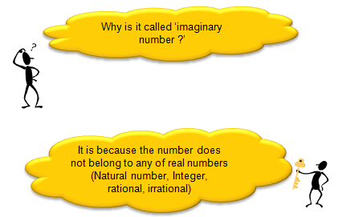
Here goes several videos about the history of complex (If the following link does not work, try search in YouTube using following titles as a keyword). Most of the material says something like the first two video listed below and recently found another video (the third one) explaining the origin of complex number in a little bit different perspective. The last two video shows a little different opinion on existing theory on the origin of complex number. Whatever the truth is, all of these would help you get the big picture of the complex number.
What is the meaning of a complex number in Engineering ?
Probably this is a question that everybody might have had and nobody was brave enough to ask the question in the class.
You would get a little bit different answers depending on who you talk to, but my version of answers are
What is the meaning of the complex number ? Ans > This is very meaningful question but not easy to answer. My answer is "a number representing a combination of any two different entity in the form of a + b i". Some of the examples are as follows. (You can google for more examples or different form of answers to this question. or if you are more serious thinker, I strongly recommend you to read some materials on History of Mathematics and Philosopy on Mathematics/Mathematical Philosophy etc).
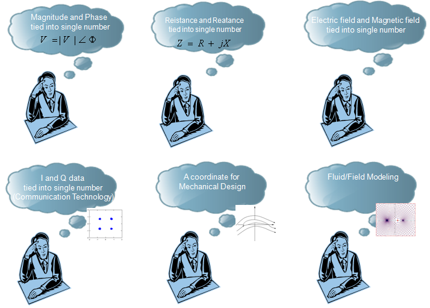
Can I express any engineering concept as a complex number ? [Ans] You would not be put in the jail just because you combine whatever two numbers into a single complex number. For example, you may come up with a new expression 'l = p + w i' where l = expected life, p = my blood pressure, w = my body weight. But I haven't seen anybody or any text book which use this expression. Why not ? It would be because we don't see any clear practical meaning out of this expression (l = p + w i). What do you mean by "practical meaning" ? (The serious answer to this question would require a lot of reading and writing... ) I would try to answer this question by an example. Let's take a special complex number which is very widely used in electrical engineering.
Z = R + j X
,where Z = Impedence, R = Resistance which is normally caused by Resistor, X = Reactance which is normally caused by Capacitance and Inductance. In this example, we combined the two number (Resistance R and Reactance X into a complex number called Impedance Z. Both Resistance and Reactance are doing the role of making the current flow difficult (i.e, impeding the current). Registance impedes the current flow by reducing the flow and Reactance impedes the current flow by pushing backward or pushing forward the current flow. Overall influence of this 'impeding factor' on current flow/voltage drop can be more easily described by this combined number(complex number). For the details, I recommend you to read some materials about electrical engineering. This is just one example related to the complex number called 'Z (impendance)' in electricity. Every complex number in the engineering has it's own practical meaning and it's own reason why they are expressed in a complex number rather than just being used as two separate numbers.
One thumb rule of meaningfullness of a complex number in engineering would be to ask following questions to yourself and how many "Yes" you would get as the answers. i) Do the two numbers (real part and imaginary part of the complex number) has any 'determined' relationship ? ii) Does the magnitude of the complex number also has any practical meaning ? iii) Does the phase of the complex number also has any practical meaning ? iv) Does mathematical operation of the complex number (e.g, addition, substraction etc) also has any practical (physical, electrical) meaning ?
Whenever you see any complex number in engineering, I would recommend you to ask these question to yourself and try to find answers. Just doing this would give you a lot of insight on the concept of the entity. If you don't take this process seriously, you would do a lot of math/calculations using those numbers but you would not really understand the meaning of the concept.
Representation of a Complex Number
There are two different way of representing a complex number. The original form(I don't know what is the formal name of this form) is as follows. I would not talk any more about this form since I already described about this form above.
Since a complex number has two components in it, you can present it in a 2 dimmensional coordinate system with horizontal axis representing the "real" portion and vertical axis represending the imaginary portion. Once you put a complex number on a coordinate system, you can get the distance between the origin and the point represented by the complex number. This distance is called "Amplitude of the complex number" or "Absolute value of the complex number". You can also calculate the angle from the positive real axis to the line connecting the origina and the complex number. This angle is called "Angle of the complex number" or "Arg of the complex number". (Does this concept remind you of anything ?. You can represent a complex number with 'Absolute value' and 'Angle' as follows and this representation is called "Polar representation of a complex number".
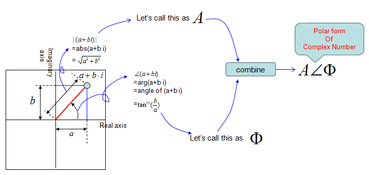
There's another form of representing a complex number. It is illustrated as below and I think you can understand the meaning of the expression as long as you have basic knowledge of trigonometry. This form is also be related to Euler equation and is very important to understand De Moivre’s Theorem which will be explained later.
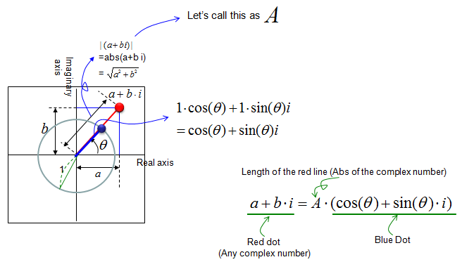
Now you may have question saying "Why we have many different kind of representation of a complex number ?", "When we use the original form and when we have to use polar form ?".
It is purely based on the usage. There is no rules saying "You MUST use the original form in this situation and you MUST use polar form in that situation". You can use whatever form makes you feel more comfortable. In most case, you would use the original form, but sometimes You may use polar representation because it may be closer to physical meaning of a complex number. Sometimes, you may use polar representation because it is more convinient for mathematical calculation.
Mathematical Operations for Complex Number ?
Like any other number system (e.g, integer, rational number etc), you can apply various mathemtical operators for complex number as well. I will explain basic mathematical operation for complex number, but you would hardly have chance to do this kind of calculation by hands. In most case you may use various software to do this calculation. So in this section, I would like you to understand the meaning of each operation. One of the easiest way to understand the meaning of these operation would be to present it on a coordinate system and try to visualize it.
Let's first look into the addition of two complex number. Let's first look at the symbolic process. If I define two complex number c1 = a + bi, c2 = c + di, the addition of these two numbers is as follows.
c3 = c1 + c2 = (a + b i) + (c + d i) = (a + c) + (b + d) i
You would notice that this is exactly the same result as summation of two vectors [a, b], [c, d] and graphical presentation is also same as vector summation as shown below.
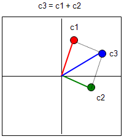
Now let's look into the substraction between two complex number. Let's first look at the symbolic process. If I define two complex number c1 = a + bi, c2 = c + di, the addition of these two numbers is as follows.
c3 = c1 - c2 = (a + b i) - (c + d i) = (a - c) + (b - d) i
You would notice that this is exactly the same result as summation of two vectors [a, b], [c, d] and graphical presentation is also same as vector summation as shown below.
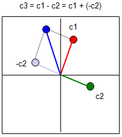
Now let's look into the multiplication of two complex number. Let's first look at the symbolic process. If I define two complex number c1 = a + bi, c2 = c + di, the addition of these two numbers is as follows.
c3 = c1 x c2 = (a + b i) x (c + d i) = a c + a d i + b c i + b d i^2 = (a c - b d) + (a d + b c) i
Unlike addition and substraction, multiplication of two complex number is totally different from the multiplication of two vector (You can refer to 'Vector' section for the details of vector multiplication). The graphical interpretation of complex number multiplication is as follows. If I put this into simple words, when two complex number are multiplied, the angle of the resulting number is the summation of the two complex number and the magnitude(absolute number) of the resulting number is multiplication of the magnitue of the two complex numbers. Magnitue of c3 = (Magnitue of c1) x (Magnitue of c2) Angle of c3 = (Angle of c1) x (Angle of c2) Note : You may realize that complex number multiplication become much easier if you represent the vectors in polar form.
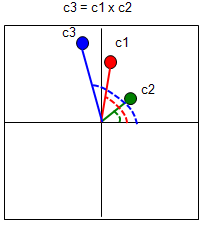
As I mentioned above, one of aspect of complex number multiplication is adding the angle of the two complex numbers. If the magnitude of c2 is 1 as shown below, the resulting complex number (c3) is the c2 being rotated by the angle of c2. It means that the role of c2 in this case is to rotate c1 or to shift phase of c2. This is very important property and you would see this kind of operation in many area in engineering.
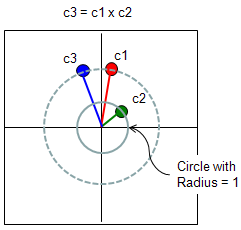
I want to introduce a theorem that you can easily understand and is very useful to you. It is De Moivre's theorem saying as follows.
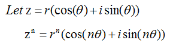
What does this mean ? It means that if you want the n th power of a complex number, you only have to do following steps i) Convert the complex number into a trigonometric form ii) Get the power of r (the magnitude of a complex number) iii) Just multiply the angle of the complex number and plug it into the trigonometric function. Let's look at an example as shown below.
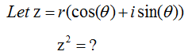
The question is simple. It is to get the power of 2 for a complex number. How would you get this ? You can try following.
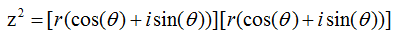
I would not show you how to calculate this. You can do it with junior high school math. If you remember what you read in previous section about 'multiplication of complex numbers'. I said the multiplication of two complex numbers can be obtained just by going through follow steps.
Magnitue of c3 = (Magnitue of c1) x (Magnitue of c2) Angle of c3 = (Angle of c1) x (Angle of c2)
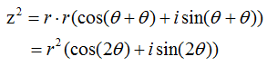
Why this theorem is important ? It is important because it is a very handy tool for you. Let's say we have to get the power of 100 for a complex number.
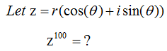
How would you get the answer for this ? The first thing you can think of would be to try as follows.
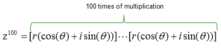
Can you do this ? You would do it if you have around one full day to kill. What if you made a mistake when you do this around 50 times and didn't realize it ? You would notice that this kind of brutal multiplication would not be a practical method for this case. This is a good place where you think about using De Moivre’s Theorem. With the theorem, you can get the solution to power of 100 for the complex number in single step as shown below.
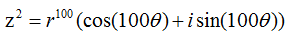
Now you would realize that De Moivre’s Theorem can be a very handy tool. But there is a precondition for using this theorem. In most case, people would not give you a complex in trigonometric form and ask you to get the power of n for it. You would normally get the complex numbers in the form like 1 + i, 2 - 3 i. So you have to know first on how to convert a complex number into trigonometric form. See Representation of a complex number section and try to get familiar to all of those presentation and how to convert one form to another form.
One of the most famous form of complex number which is used in engineering would be what we call 'Euler form' or 'Euler Equation'. It is represented as follows. I am not going to explain on how this form is derived and how to prove this. (You may goole on this subject if you are interested... but I don't think this is such an important issues in most of engineerings). I will talk more about what this implies, how we use this and why this form is so commonly used. 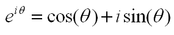 Just by looking at the equation itself, you would notice that i) Euler equation would tell you how to interpret the exponential form of a complex number ii) Euler Equation would tell you the exponential form of a complex number would represents a certain cyclic/periodic behavior since cos(), sin() represents cyclic/periodc behavior). iii) Amplitude/Maginitude of e^(i theta) is always "1" regardless of the value theta.
If you represent this Euler equation into a coordinate system, it is represented as follows (Refer to the section "Representation of Complex Number" if you are not clear on how we can represent in this way). One important point you have to bear in mind is that the Euler Equation can represents only such a points on the perimetor of a circle with radius 1. (Does this mean that we cannot express any points on the circle with the radious other than 1 ? You will see the answer to this question later in this section).
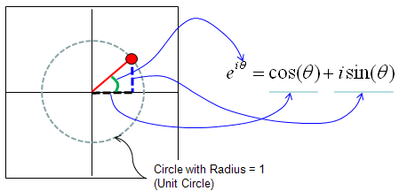
Let's take a very simple example. Let's assume that theta = pi/4. Then you would have a complex number as shown below.
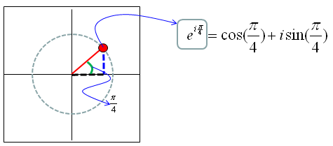
If you take the complex number from Euler Equation where theta = 0, 1*2*pi/20, 2*2*pi/20,3*2*pi/20,....,39*2*pi/20 and plot all of them on a coordinate system you would see the outline of a circle (a circle drawed in 40 dots). Following is what I did for you and below is the Matlab (Octave) code for this.
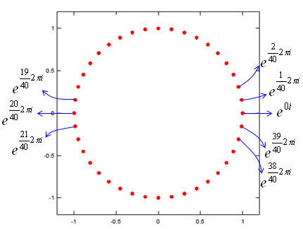
t=0:2*pi/40:2*pi; e1 = exp(t*j); plot(real(e1),imag(e1),'ro','MarkerFaceColor',[1 0 0]); axis([-1.2 1.2 -1.2 1.2]);daspect([1 1]);
I said earlier that Euler form is basically for representing a complex number sitting on the perimeter of a circle with radius=1. Does this mean that we cannot represent any complex number which sits out of this radius ? You CAN. Just by multiplying a number (real number) and Euler form, you can represent a complex sitting on any size of radius. A couple of examples are as follows.
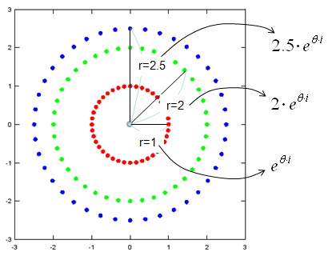
t=0:2*pi/40:2*pi; e1 = exp(t*j); e2 = 2*exp(t*j); e3 = 2.5*exp(t*j);
plot(real(e1),imag(e1),'ro','MarkerFaceColor',[1 0 0], real(e2),imag(e2),'go','MarkerFaceColor',[0 1 0], real(e3),imag(e3),'bo','MarkerFaceColor',[0 0 1]); axis([-3 3 -3 3]);daspect([1 1]);
If you generalize the real number representing the radius of the circle on which a complex number sits, you would have the following format which is very widely used in many engineering document.
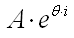
Just for your reference, I would give you a very famous case where you see this Euler form is used. It is Fourier Transform as shown below. For the details of Fourier Transform, click here.
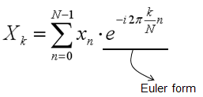
If you extend Euler form even further and add a real value as follows. You can have an equation as follows. In this equation, the radius on which the complex number sits is expressed as exp(a).
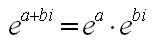
This form is also very widely used especially as a solution to various differential equation and representation of a transfer function of a control system. For the graphical representation of this format, click here.
Another very famous case where you see this form of complex number is Laplace Transform as you see below. Click here for the details of Laplace Transform.
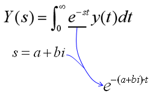
Why Euler form of complex number is so widely used ?
Sorry, Contents will be posted later.
Complex Number and Transformation
My contents will come later, but frist I would like to recommend an excellent video below.
|